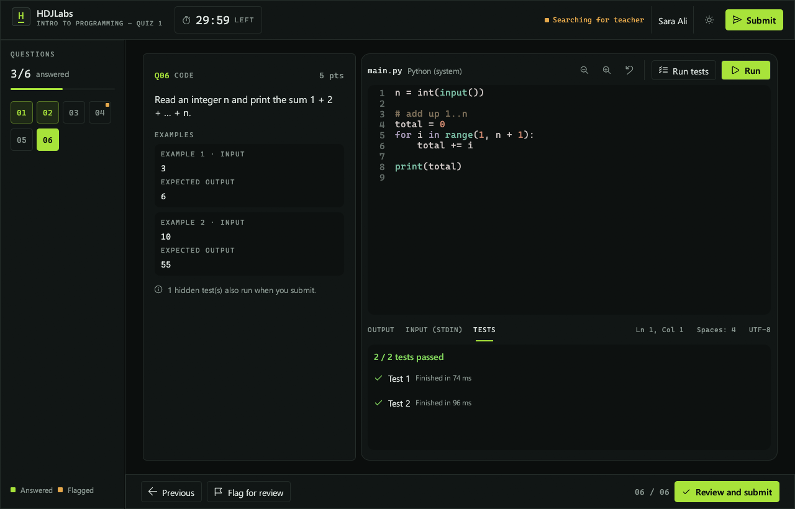
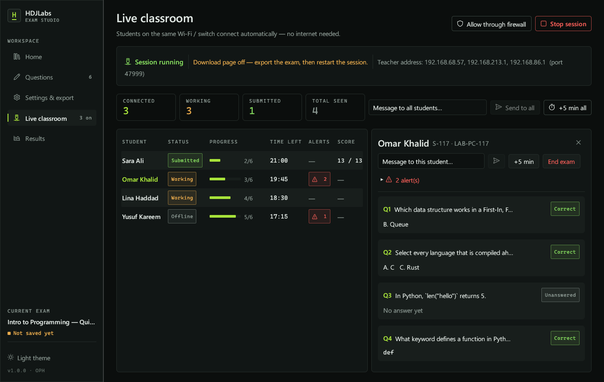
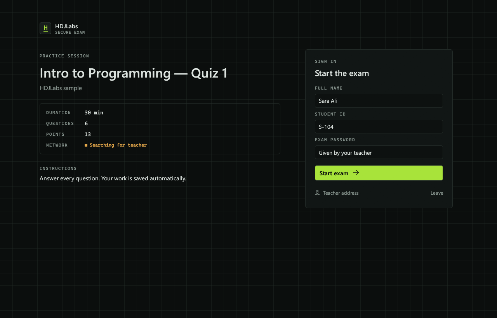
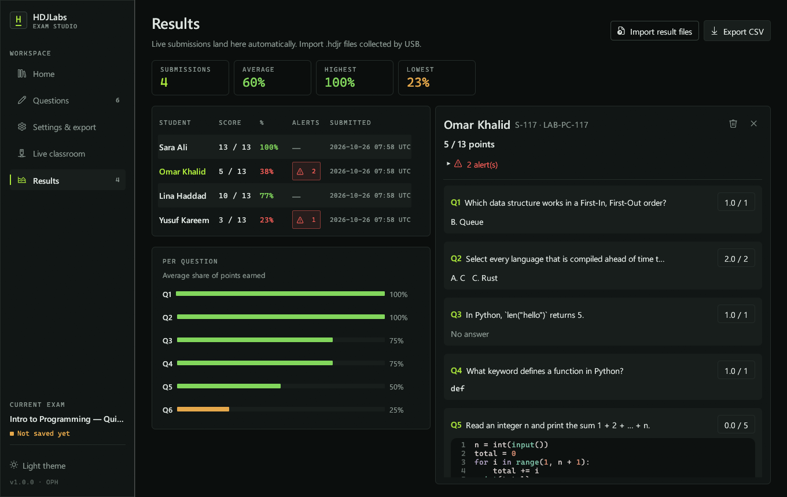

Write the questions in HDJLabs Studio and export a single file. Students run it, enter the password you announce, and the PC stays inside the exam until they submit. Results come back over the classroom network. No internet, no accounts, no server.

The exam runs on its own Windows desktop. No taskbar, Start menu, notifications or other windows exist there, so there's nothing to switch to.
Win key, Alt+Tab, Alt+F4, Ctrl+Esc, Ctrl+Shift+Esc and Print Screen are swallowed, and so are keystrokes injected by macro tools.
Task Manager, lock, sign-out and the power menu are removed for the duration, then restored exactly as they were.
Three- and four-finger gestures and edge swipes are switched off.
Screenshots, recordings and screen shares capture a blank window. The exam refuses to start under Remote Desktop or while TeamViewer, AnyDesk and similar tools run.
Every setting is backed up first. If the power goes out mid-exam, the next launch restores the PC, and the student's answers resume from an encrypted autosave.
Line numbers, highlighting, Tab indentation on selections, auto-indent, Ctrl+/ comments, a stdin box and per-test results. Student code runs in a Job Object sandbox: one process, capped memory and time, no clipboard.
| Language | Runs with |
|---|---|
| Python | Built in. Uses the installed CPython if present. |
| JavaScript | Built in. Uses Node.js if present. |
| C / C++ | gcc, g++ or clang (MinGW, MSYS2, LLVM) |
| Java | Any JDK |
| Go · Rust | go, rustc |



SmartScreen may warn on first run because the file isn't code-signed yet. Choose More info → Run anyway. Network setup and firewall notes are in the classroom guide.